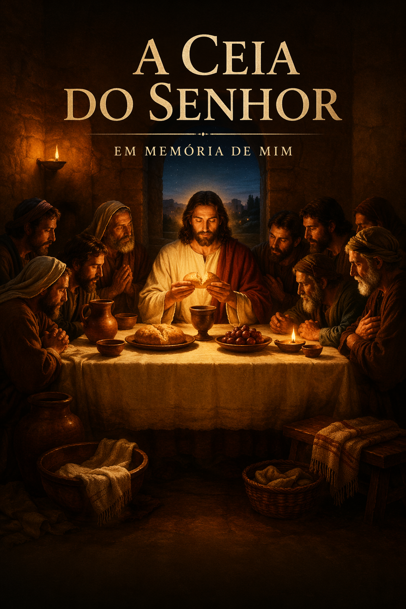

O batismo não é o destino final, mas o portal de entrada para uma nova jornada de santificação. Ao sair das águas, você assume o compromisso público de viver o lema da nossa caminhada: "Ultrapassando Limites". Isso significa que a vida que antes era governada pelos seus próprios desejos, agora é governada por Cristo e Sua Palavra.
Um dos maiores privilégios após o batismo é a participação na Ceia do SENHOR. Este não é um lanche comum, mas um memorial sagrado onde o pão e o fruto da videira nos lembram do sacrifício de Jesus. É o momento em que o Corpo se reúne para renovar a aliança e fortalecer a comunhão.
A santificação é o processo contínuo de se tornar mais parecido com Jesus. O batismo lavou simbolicamente o passado, mas a caminhada diária exige que você mantenha suas vestes limpas, fugindo das ciladas do pecado e buscando os frutos do Espírito. Como membro do Corpo de Cristo, suas ações agora refletem o nome do SENHOR e a saúde da igreja local.